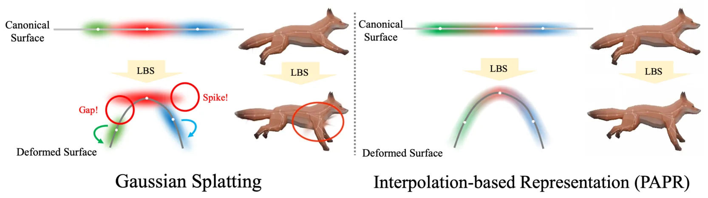
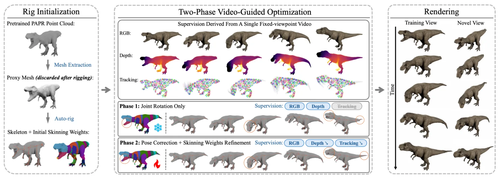
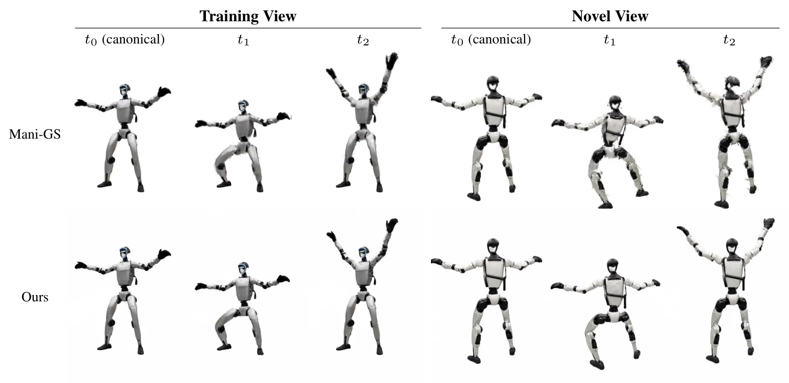
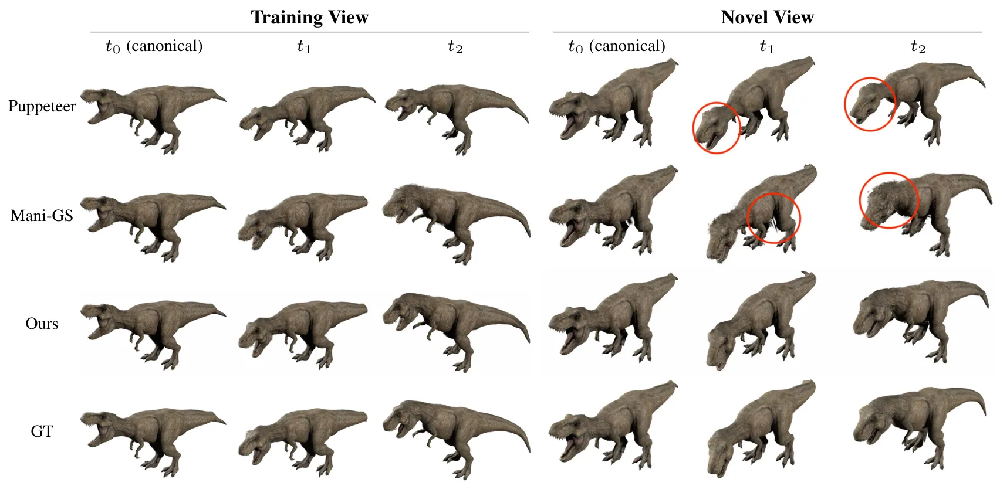
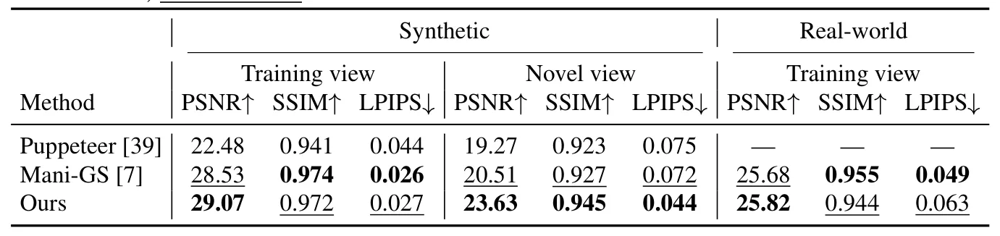

RigPAPR：从固定视角视频驱动静态神经点云的骨骼动画RigPAPR: Rig-Based Animation of Static Neural Point Clouds from a Fixed-Viewpoint Video
与点云/神经表示和可动画资产相关，但离 SLAM/GNSS 主线较远；主要价值在静态重建资产的后处理与重定位。
一句话工作总结
RigPAPR 用无固定 primitive 形状的点渲染缓解骨骼驱动神经点云时的关节裂缝和尖刺。
摘要
静态神经点重建可以从已知位姿图像中高保真捕获对象。RigPAPR 旨在把这种静态重建按照单目固定视角驱动视频进行动画化，并恢复可绑定、可重定位的 3D 资产。既有方法常通过直接线性混合蒙皮或 mesh proxy 变形 Gaussian splats，但在关节边界容易产生伪影；原因是每个 splat 在 canonical pose 中携带单独形状，变形时无法随关节弯曲而保持邻域拼接。PAPR 不为每个 primitive 固定形状，而是在渲染时依据变形后 primitive 位置重新组合每个像素，使表面能随关节自然重构。RigPAPR 自动绑定静态 PAPR cloud，并用单个固定视角视频直接 LBS 驱动，无需 mesh proxy、姿态相关校正或类别模板；实验中 novel view PSNR 较 mesh/3DGS baseline 提升超过 3 dB，并改善关节边界渲染。
Static neural point reconstructions capture a subject at high fidelity from posed images. Given such a reconstruction, we aim to animate it to follow a monocular fixed-viewpoint driving video of the subject, whether captured or produced by image-to-video (I2V) generation, and to recover a rigged, re-posable 3D asset. Existing methods deform Gaussian splats through direct linear blend skinning (LBS) or mesh proxies, both of which are prone to joint-boundary artifacts under articulation, even with per-primitive corrections. We trace the artifact to the representation: each splat carries an individual shape calibrated in the canonical pose to tile with its neighbours. Under rigid LBS, each splat moves with its bone but cannot bend, so the canonical tiling breaks at joint boundaries into gaps and spikes. Proximity attention point rendering (PAPR) instead carries no per-primitive shape; each pixel is recomposed at render time from the deformed primitives' positions, so the surface re-forms naturally with the articulation. We present RigPAPR, which auto-rigs a static PAPR cloud and drives it under direct LBS from a single fixed-viewpoint video, without mesh proxy, pose-dependent correction, or category template. On synthetic subjects, RigPAPR matches the strongest baseline at the supervised view and exceeds mesh-based and Gaussian-splatting baselines at novel views by 3+dB PSNR, with cleaner joint-boundary renderings of both synthetic and real subjects.
中文解读摘录
- 作者：Yuang Shi, Simone Gasparini, Géraldine Morin, Wei Tsang Ooi；类别：cs.CV / cs.MM / eess.IV；发布日期：2026-06-05；采集 score=11
- 核心问题：现有渐进式 3DGS 多采用离散 LoD 层，每层维护独立 splat 集合，容易导致误差累积、splat 冗余和质量跳变。
- 方法亮点：提出连续层级
Evolution Tree，以 wavelet-like parent-child refinement 让子节点显式修正祖先层误差，从而形成稀疏、可压缩的层间信号。 - 结果信号：论文称 splat 冗余从超过 65% 降至低于 25%，传输 payload 最高降低 2.4×，GPU VRAM 最高降低 5.5×，适合实时自适应 3DGS streaming。
- 关注价值：如果工程实现稳定，这类连续 LoD/流式表示可用于移动机器人/远程巡检中的大场景 3DGS 地图分发与带宽自适应浏览。
图表/页面预览
{kind=link}

{kind=link}

{kind=link}

{kind=link}

{kind=link}
